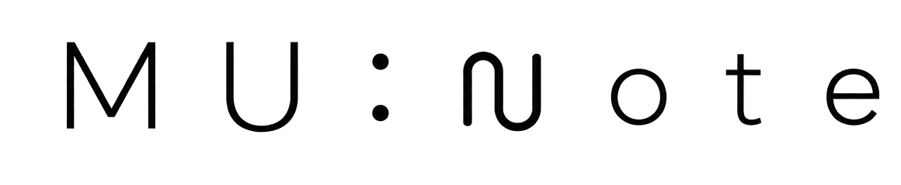

Get the app
MU:note
· Guides
Practice guides for musicians
By
Jisoo Kim
— Founder of MU:note. Master's degree in music, music educator, and author of published music research.
How to Keep a Music Practice Journal (and Actually Stick With It)
What to write in a music practice journal after each session, why memory of practice time misleads, and how a journal helps you plan a piece by a deadline.
Free Music Practice Log Template (Printable PDF)
A free one-page music practice log you can print: date, piece, minutes actually played, what worked, what to fix, and a weekly review box. Any instrument.
How Long Should You Practice Your Instrument Each Day?
How long to practice an instrument each day for hobby players, exam students and music majors, why short daily practice beats one long weekly session.
How to Practice More Efficiently: Tips for Musicians
Practice an instrument more efficiently: skip early run-throughs, start at the slowest tempo, and finish one section a day instead of the whole piece at once.
How to Stay Motivated to Practice Your Instrument
Why practice motivation fades and how to keep it: make progress visible, keep a small daily habit, practice alongside friends, and stop punishing missed days.
Music Practice Tracker Apps Compared: Which One Fits You?
A factual comparison of music practice tracker apps — how each records practice time (timer, manual entry or automatic) and which kind of musician each fits.
Stage Fright for Musicians: Why It Happens and What Helps
Why stage fright hits musicians so hard, what research and well-known performers show, and practical ways to make your preparation visible before a concert.
How to Build a Practice Routine That Sticks
How to build a daily practice routine for piano, guitar or any instrument: what order to practice in, how to split your time, and how to keep the habit.
How to Prepare for a Music Audition
How to prepare for a music audition or entrance exam: plan back from the date, practice performing in halls and mock auditions, and trust your own work.